Pre-Boarding בעזרת Vibe Coding
~40 שניות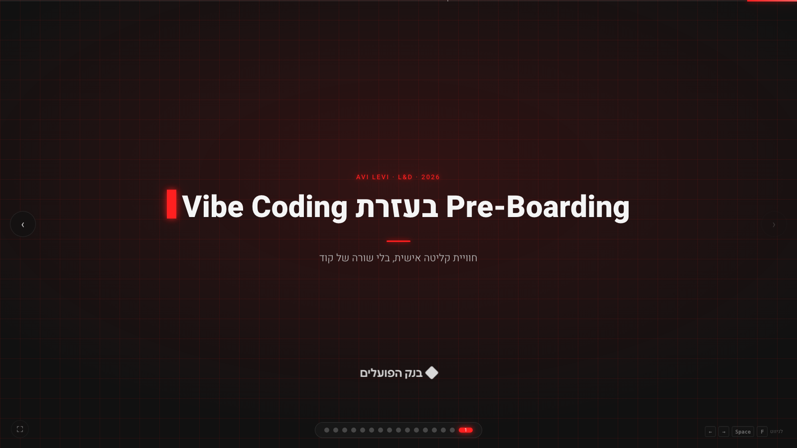
קריינות, פתיחה
"שלום לכולם. אני אבי לוי, מנהל ב-L&D של בנק הפועלים. הנושא שלנו היום: איך אפשר לשפר את ה-Pre-Boarding בעזרת Vibe Coding."
"בקצרה, ניקח את הזמן הריק שבין חתימת חוזה לבין יום ראשון, ונהפוך אותו לזמן של בניית חיבור אישי. בלי תקציב פיתוח, בלי לכתוב שורת קוד אחת."
תחשבו על השבוע הראשון שלכם
~50 שניות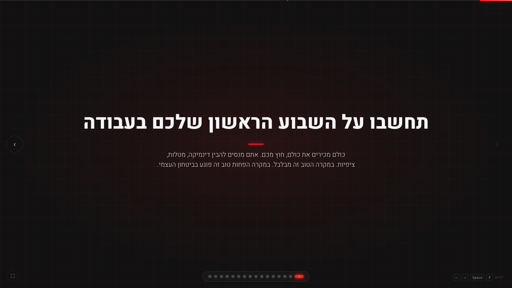
קריינות, להניח את הקהל בנעלי העובד החדש
"רגע לפני שנכנס לעניינים, תחשבו על השבוע הראשון שלכם בעבודה כלשהי. איפה אתם נמצאים בראש?"
"כולם מכירים את כולם, חוץ מכם. אתם מנסים להבין דינמיקה, לזכור שמות, להבין ציפיות, להבין נהלים, ובמקביל לעשות עבודה."
"במקרה הטוב זה מבלבל. במקרה הפחות טוב זה ממש פוגע בביטחון העצמי. וזה הפער שאנחנו רוצים לסגור."
הימים הראשונים מעצבים הכל
~75 שניות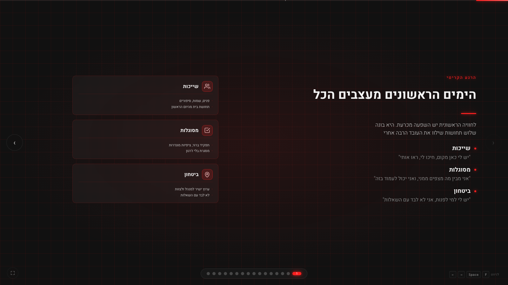
קריינות, שלוש התחושות המכריעות
"לחוויה הראשונית בארגון יש השפעה מכרעת. היא בונה שלוש תחושות שילוו את העובד הרבה אחרי."
"ראשונה, שייכות. 'יש לי מקום פה, חיכו לי, ראו אותי'. בלי שייכות, גם הכישרון הכי טוב לא יישאר."
"שנייה, מסוגלות. 'אני מבין מה מצפים ממני, ואני יכול לעמוד בזה'. בלי מסוגלות, הביטחון העצמי נשבר."
"שלישית, ביטחון. 'יש לי למי לפנות, אני לא לבד עם השאלות'. ביטחון הוא הבסיס לקחת סיכונים, לנסות, ללמוד."
"אם נכוון לשלוש התחושות האלה כבר לפני יום ראשון, הקליטה הופכת מאירוע מבלבל לחוויה מעצימה."
מה הארגון נותן היום
~45 שניות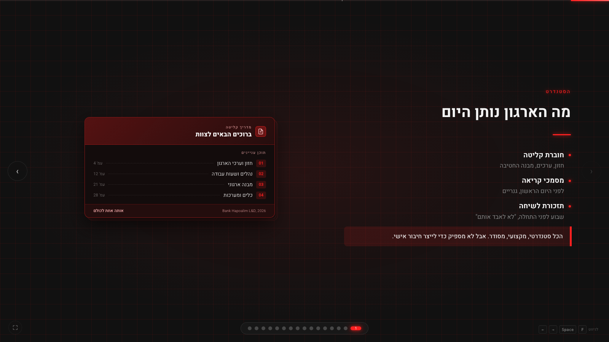
קריינות, מהי החוברת ולמה היא לא מספיקה
"מה הארגון נותן היום, ברירת המחדל? חוברת קליטה מצוינת, עם חזון, ערכים ומבנה החטיבה. מסמכי קריאה לפני יום ראשון. תזכורת לשיחת טלפון שבוע לפני התחלה."
"הכל מקצועי, הכל מסודר. אבל אותה חוברת מקבל כל אחד. אין שם דבר שמתאים לעובד הספציפי שאני קולט. זה הפער שאנחנו ננסה לסגור."
מה אם נתחיל לפני היום הראשון?
~25 שניות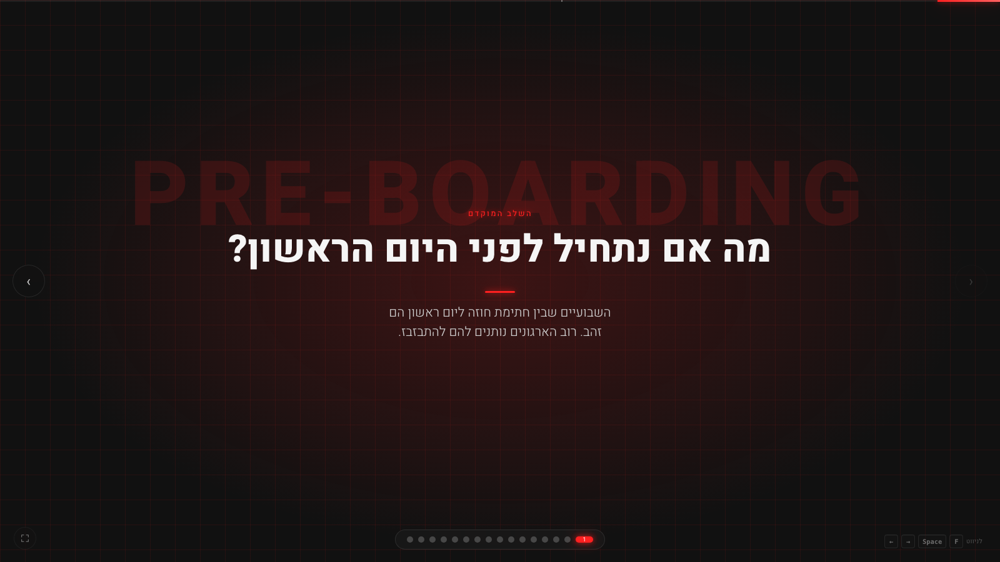
קריינות, כותרת המקטע
"אז נכנסנו לשלב המוקדם, ה-Pre-Boarding. השבועיים שבין חתימת חוזה ליום ראשון."
"רוב הארגונים נותנים להם להתבזבז. הם זמן זהב."
14 ימים שבין חתימה להתחלה
~60 שניות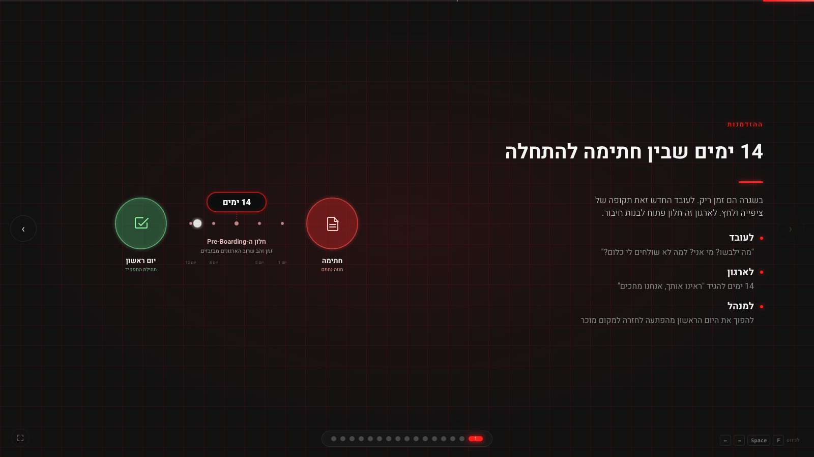
קריינות, שלוש פרספקטיבות על אותה תקופה
"בשגרה ה-14 ימים האלה הם זמן ריק. אבל אם נסתכל מבעד לשלוש זוויות, נראה כמה הזמן הזה עשיר."
"לעובד, זאת תקופה של ציפייה ולחץ. 'מה ילבשו? מי אני בעצם? למה לא שולחים לי כלום?'."
"לארגון, זה חלון פתוח להגיד 'ראינו אותך, אנחנו מחכים', ולבנות חיבור."
"למנהל, זאת הזדמנות להפוך את היום הראשון מהפתעה לחזרה למקום מוכר."
כלי AI במקום שורות קוד
~50 שניות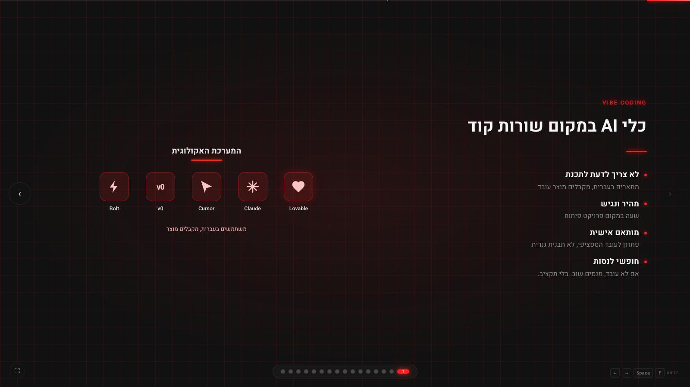
קריינות, מה זה Vibe Coding ומי יכול
"לפני שאני מספר מה עשיתי, רגע על Vibe Coding לאלה שלא מכירים."
"Vibe Coding זה להשתמש בכלי AI כמו Lovable, Claude, Cursor או v0, כדי לבנות מוצר בלי לכתוב קוד. מתארים בעברית מה רוצים, ה-AI בונה."
"זה מהיר, זה נגיש, וזה מאפשר לי, מנהל ב-L&D שאינו מפתח, לבנות פתרון מותאם אישית. אם זה לא עובד, מנסים שוב. בלי תקציב, בלי פרויקט פיתוח."
אז בניתי לה דף נחיתה אישי
~35 שניות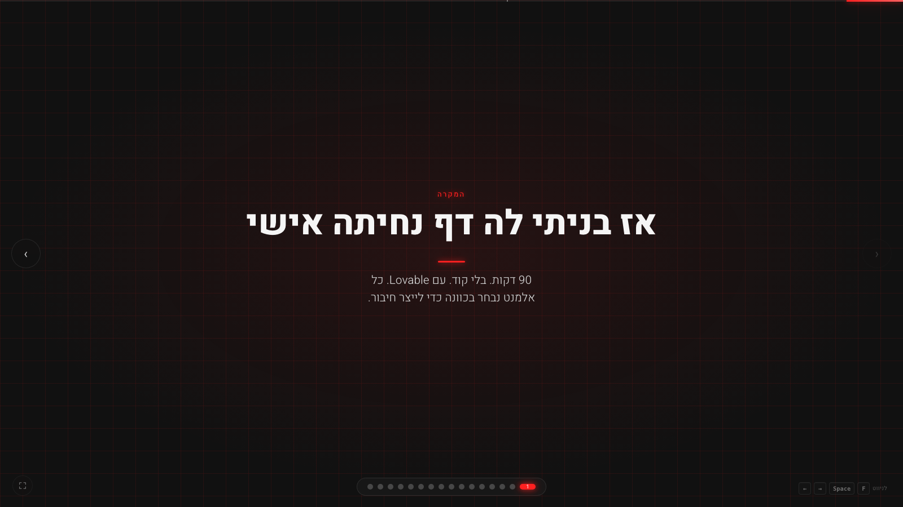
קריינות, גשר אל הפיצ'רים
"לאחרונה גייסתי לצוות עובדת חדשה. ביום החתימה קבענו תאריך התחלה, כשבועיים וחצי קדימה."
"רגע אחרי שיחת התזכורת בשבוע שלפני, החלטתי לעשות עוד צעד. בניתי לה דף נחיתה אישי. תוך 90 דקות. ב-Lovable. בלי קוד."
"בואו נראה מה היה שם."
מי אנחנו, הצוות שלך
~55 שניות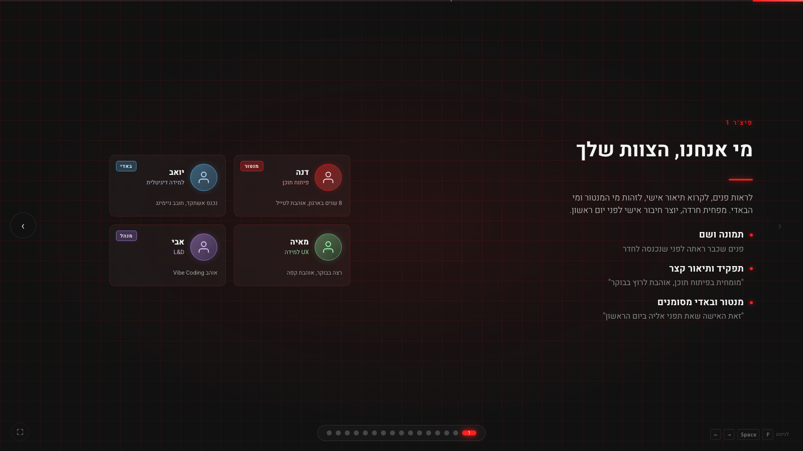
קריינות, פיצ'ר ראשון, פגישה עם הצוות מבעוד מועד
"הפיצ'ר הראשון, הצוות. תמונה ושם של כל אחד מאיתנו, תפקיד, ותיאור אישי קצר."
"סימנתי במיוחד מי המנטור שלה ומי הבאדי. כשהיא נכנסה ביום ראשון לחדר, היא כבר ידעה מי אנחנו, ולמי לחייך."
"למה זה חשוב? ראיית פנים של אדם הופכת אותו ממשהו אבסטרקטי לאדם אמיתי. וזה מפחית חרדה הרבה לפני יום ראשון."
מה תעשי כאן, בלי ז'רגון
~50 שניות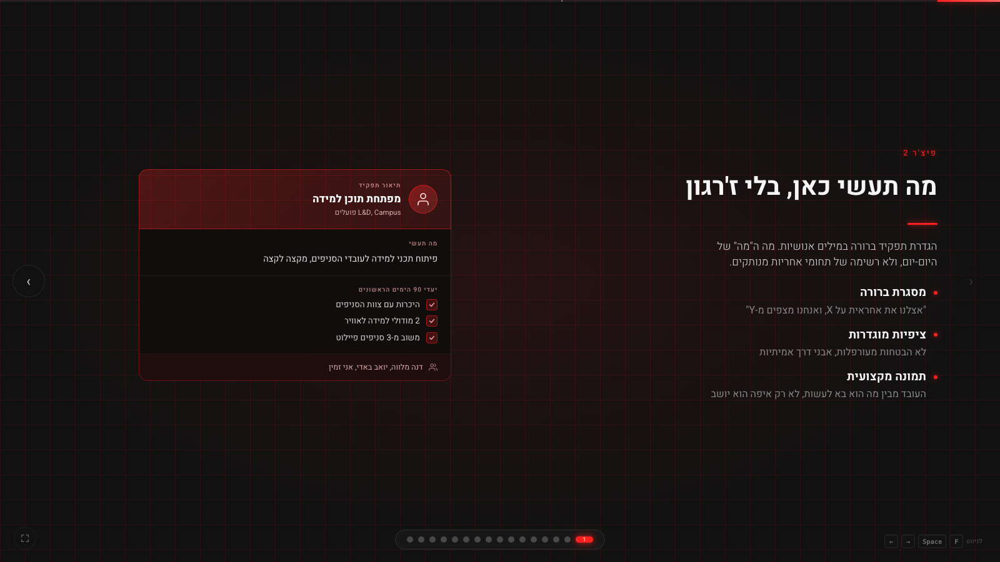
קריינות, פיצ'ר שני, הגדרת תפקיד אנושית
"הפיצ'ר השני, הגדרת תפקיד ברורה, במילים אנושיות. בלי ז'רגון."
"לא 'תהיי אחראית על אקוסיסטם הלמידה'. אלא 'תפיקי מודולי למידה לעובדי הסניפים. ב-3 חודשים, תכירי את הצוות, תוציאי 2 מודולים, תכניסי משוב מ-3 סניפים'."
"ציפיות מוגדרות, אבני דרך אמיתיות. העובד מבין מה הוא בא לעשות, לא רק איפה הוא יושב."
מה מחכה לך בימים הראשונים
~55 שניות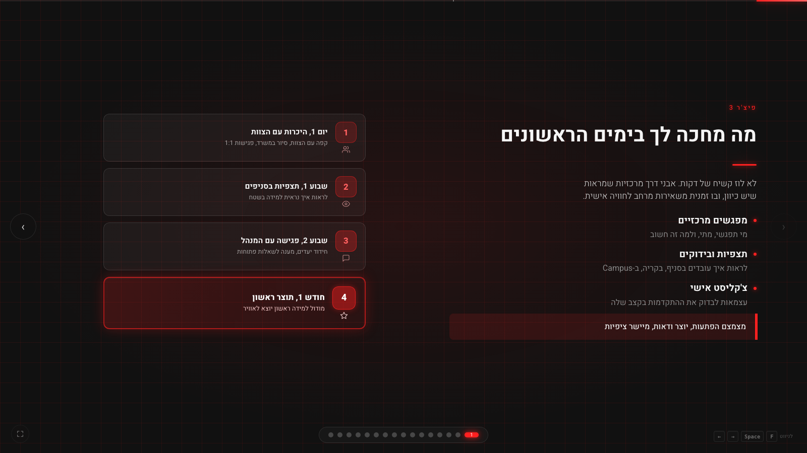
קריינות, פיצ'ר שלישי, מפת ימים ראשונים
"הפיצ'ר השלישי, מפת הימים הראשונים. לא לוז קשיח של דקות, כי כולם יודעים שזה דינמי. אבני דרך."
"יום 1, היכרות עם הצוות. שבוע 1, תצפיות בסניפים. שבוע 2, פגישה עם המנהל. חודש 1, התוצר הראשון."
"בנוסף, צ'קליסט אישי שמאפשר לעובדת לעקוב אחר ההתקדמות שלה. מצמצם הפתעות, יוצר ודאות, מיישר ציפיות."
ערוץ ישיר אליי
~50 שניות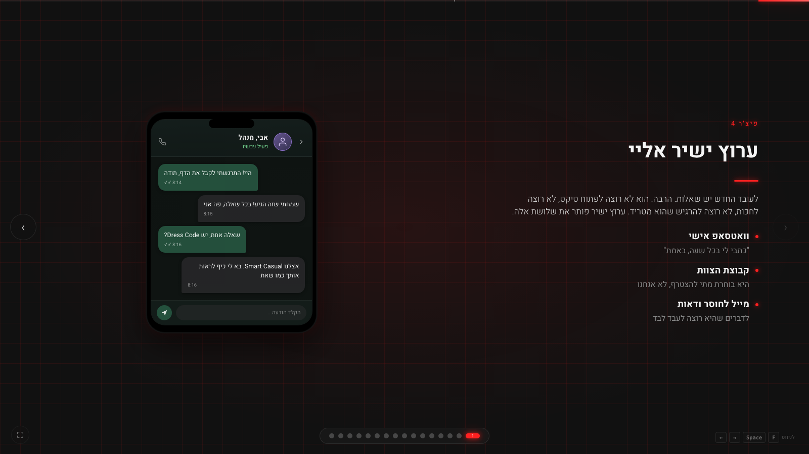
קריינות, פיצ'ר רביעי, להוריד את החסם של 'אני מטריד'
"הפיצ'ר הרביעי, ערוץ ישיר אליי. וואטסאפ אישי, מייל, וגישה לקבוצת הצוות. אבל היא בוחרת מתי להצטרף, לא אנחנו."
"למה זה כל כך חשוב? לעובד החדש יש המון שאלות והוא לא רוצה להרגיש שהוא מטריד. כשהוא יודע שיש ערוץ ישיר, מותר לו לשאול."
"ופתאום השבוע הראשון הוא לא בלבול, הוא דיאלוג."
איך אני הייתי רוצה שיקבלו אותי?
~30 שניות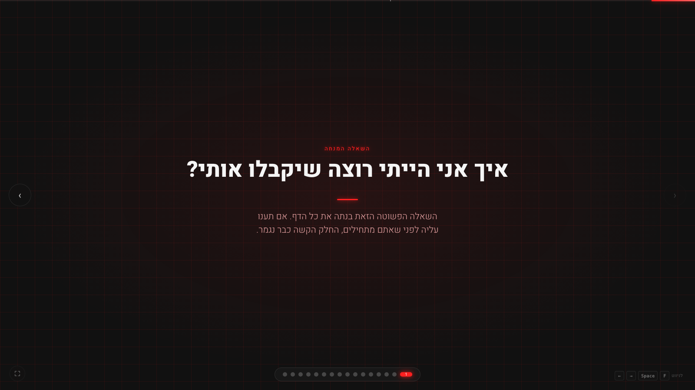
קריינות, רגע של הקשבה
"השאלה ששאלתי את עצמי לאורך כל התהליך, פשוטה: 'איך אני הייתי רוצה שיקבלו אותי?'"
"אם אתם עונים לעצמכם על השאלה הזאת לפני שאתם מתחילים לבנות, החלק הקשה כבר נגמר. כל ההחלטות נובעות ממנה."
[פאוזה של 2 שניות, להניח לשאלה לעבוד על הקהל]
שלוש מסקנות
~70 שניות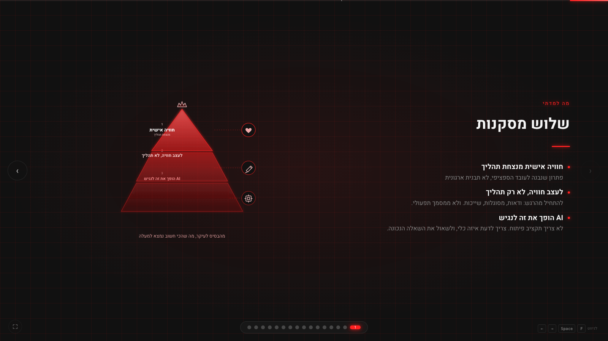
קריינות, סיכום הלקחים
"שלוש מסקנות שלקחתי מהמקרה."
"ראשונה, חוויה אישית מנצחת תהליך. פתרון לעובד הספציפי, לא תבנית. כשעובדת רואה את עצמה בדף, היא מרגישה ראויה. זה לא משהו שתבנית גנרית יכולה לעשות."
"שנייה, לעצב חוויה ולא רק תהליך. להתחיל מהרגש, ודאות, מסוגלות, שייכות. ולא ממסמך תפעולי שמסביר נהלים."
"שלישית, AI הופך את זה לנגיש. אין צורך בתקציב פיתוח גדול. צריך לדעת איזה כלי, ולשאול את השאלה הנכונה."
לא הכל ורוד
~50 שניות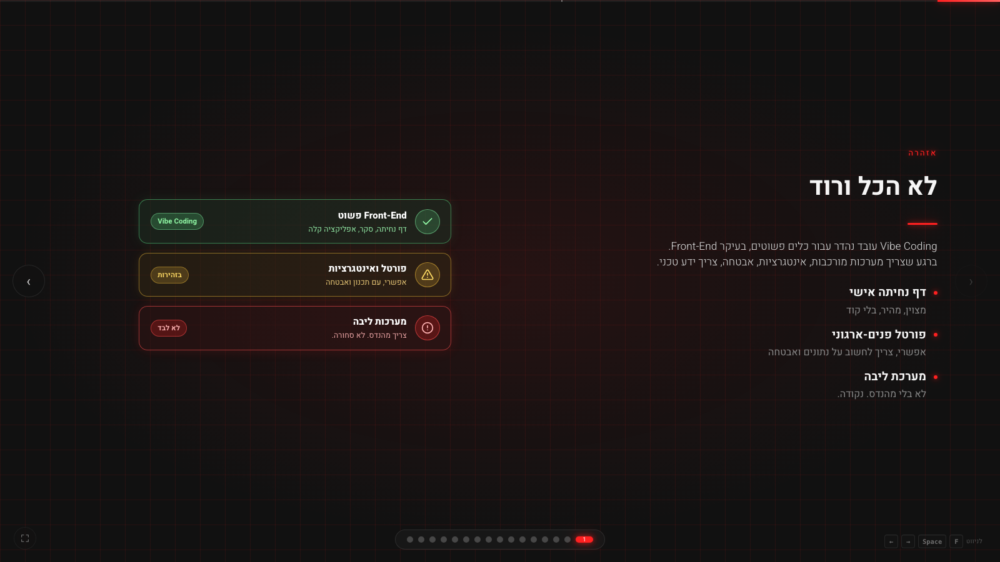
קריינות, איפה Vibe Coding עובד ואיפה לא
"חשוב להגיד, לא הכל ורוד. Vibe Coding עובד נהדר עבור כלים פשוטים, בעיקר Front-End. דף נחיתה, סקר, אפליקציה קלה."
"אבל ברגע שצריך מערכות מורכבות, אינטגרציות מול מערכות הליבה של הבנק, או דברים שדורשים אבטחת מידע, צריך ידע טכני."
"לכן להתחיל בקטן, להוכיח ערך, ולגייס מהנדסים כשהמורכבות מצדיקה את זה. זה לא תחליף לפיתוח, זה כלי משלים."
תודה
~25 שניות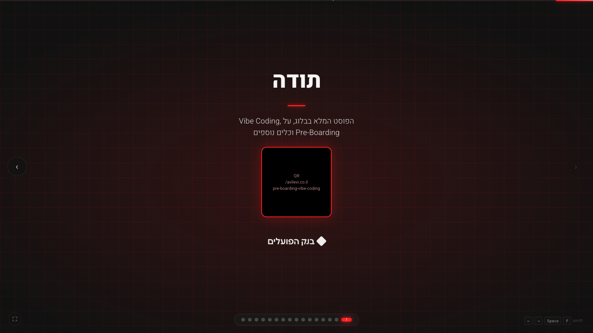
קריינות, סגירה
"תודה רבה."
"הפוסט המלא על המקרה הזה, ועוד פוסטים על Vibe Coding ועל למידה ופיתוח, נמצא בבלוג שלי. QR פה למעלה."
"אשמח לשאלות."